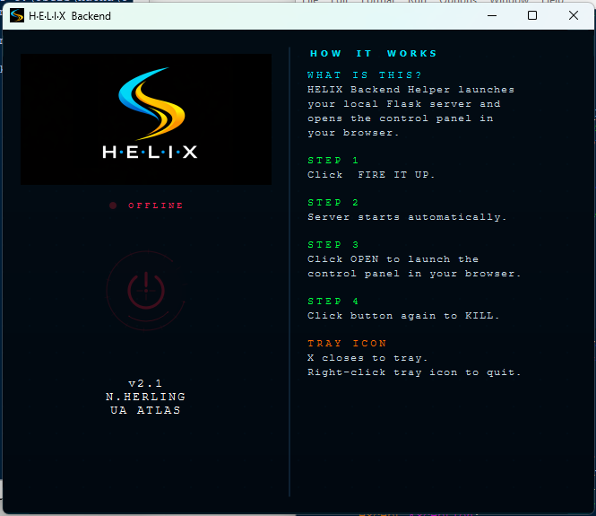
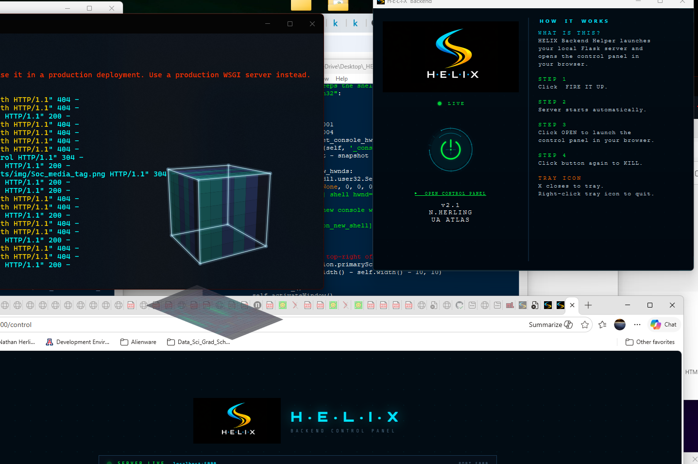
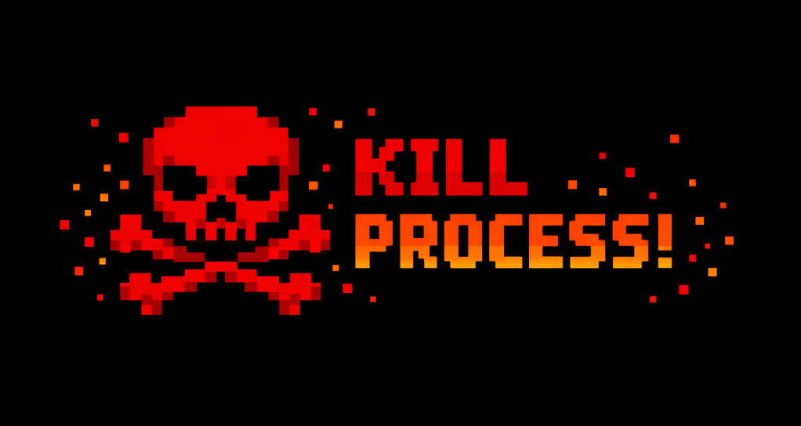

HELIX is not built on a traditional web stack. There is no framework, no build pipeline, no package manager. It is plain HTML, CSS, and JavaScript — written by hand, served locally, and pushed directly to GitHub Pages.
The "stack" is really a workflow: a local Flask server
running on port 5000 acts as a dev environment with live endpoints, a terminal interface,
and a control panel. When work is ready, a git push deploys the static files
to GitHub Pages — no CI, no build step. The site just works.
It is a pseudo-stack — the local server provides dynamic capabilities (real-time terminal, shell commands, file serving) that disappear on the public deployment, where the site runs as pure static HTML. Both modes work. The architecture is intentionally minimal.



A research hub for one person doesn't need React, a database, or a deployment pipeline. Every layer of abstraction is a layer that can break, slow things down, or demand maintenance. The constraint is intentional: if it can be done in plain HTML and a Python script, it should be.
The Flask server exists purely as a local convenience — it lets the editor and terminal panels work during development without needing a full backend in production. GitHub Pages handles everything else for free, with zero configuration.
#_TO_DO — expand this section with more detail on the tradeoffs: what the local server can do that the static site can't, and why that's acceptable.